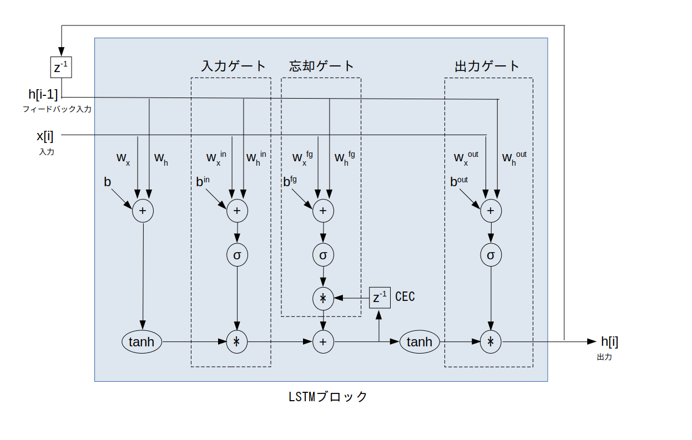

$z^{-1}$ ・・・ 1時刻遅延素子
LSTM (Long Short Term Memory: 長・短期記憶)とはRNN (Recurrent Neural Network: 回帰型ニューラルネットワーク)の一種ですので、最初に RNN について説明します。
なお今回は話を簡単にするために 3 層 RNN だけを考えます。
まずニューラルネットワークの入力層への入力信号として、以下の様な長さ L の N 個の時間領域ディジタル信号(シーケンス)を考えます(※)。
※ これまで学んできたMLPやCNNには時間の概念が無いことに注意して下さい。
\[ \left \{ \begin{align*} & x_0[i] , (i=0,1,\cdots,\textrm{L}-1) \\ & x_1[i] , (i=0,2,\cdots,\textrm{L}-1) \\ & \cdots \\ & x_{(\textrm{N}-1)}[i], (i=0,1,\cdots,\textrm{L}-1) \end{align*} \right . \]ここで自己相関関数のアクティビティで学んだように、時間領域ディジタル信号において、ある時刻に入力されたデータはそれ以前に入力されたデータと強い相関を持っていることが多いので、入力済みデータをフィードバックして再利用することでニューラルネットワークのパラメータを減らすことを考えます。
この様にして考えられたのが RNN で、そのネットワーク構成を図 1 に示します。
$z^{-1}$ ・・・ 1時刻遅延素子
この様に RNN はMLPの隠れ層の出力を入力側にフィードバックさせている構成となっています。
つまり各時刻 $i$ において $x_0[i], \cdots, x_{(\textrm{N}-1)}[i]$ 及び隠れ層からの K 個の フィードバック入力 $h_0[i-1], \cdots, h_{(\textrm{k}-1)}[i-1]$ が隠れ層に入力され、出力層から M 個の出力信号 $y_0[i] \cdots y_{(\textrm{M}-1)}[i]$ が出力されます。
ところが RNN には隠れ層への入力($x_0[i], \cdots, x_{(\textrm{N}-1)}[i]$ 及び $h_0[i-1], \cdots, h_{(\textrm{k}-1)}[i-1]$)にかけられる重みの学習が不安定であるという問題があります(※)
※ 詳しくはこちらサイトの説明が分かりやすいです。
そこで RNN を改良した LSTM が開発されました。
LSTM のネットワーク構成を図 2 に示します。

$z^{-1}$ ・・・ 1時刻遅延素子
RNN との違いは隠れ層のユニットとしてパーセプトロンの代わりに「LSTMブロック」を使っているところだけです。
この LSTM ブロックの中身は図 3 の様になっています。
なおこの図では分かりやすいように1入力・1フィードバック入力としていますが、多入力・多フィードバック入力の場合も同様に考えられます。

$z^{-1}$ ・・・ 1時刻遅延素子
$\sigma$ ・・・ シグモイド関数
CEC ・・・ Constant Error Carousel : 定誤差カルーセル$w_x$ ・・・ 入力部において入力信号に掛けられる重み
$w_h$ ・・・ 入力部においてフィードバック入力信号に掛けられる重み
$b$ ・・・ 入力部のバイアス
$w_x^{\textrm in}$ ・・・ 入力ゲートにおいて入力信号に掛けられる重み
$w_h^{\textrm in}$ ・・・ 入力ゲートにおいてフィードバック入力信号に掛けられる重み
$b^{\textrm in}$ ・・・ 入力ゲートのバイアス
$w_x^{\textrm fg}$ ・・・ 忘却ゲートにおいて入力信号に掛けられる重み
$w_h^{\textrm fg}$ ・・・ 忘却ゲートにおいてフィードバック入力信号に掛けられる重み
$b^{\textrm fg}$ ・・・ 忘却ゲートのバイアス
$w_x^{\textrm out}$ ・・・ 出力ゲートにおいて入力信号に掛けられる重み
$w_h^{\textrm out}$ ・・・ 出力ゲートにおいてフィードバック入力信号に掛けられる重み
$b^{\textrm out}$ ・・・ 出力ゲートのバイアス
LSTM の肝となるのが「CEC」と呼ばれる内部ユニットです。
RNNの学習が不安定な原因は「過去に入力したデータの情報がフィードバックを繰り返すことによって消滅していくこと」なので、CECを導入することによって過去のデータの情報をユニットの内部で長期的に記憶し、短期的な情報であるフィードバック入力と足し合わせることにしました(※)。
※ これが LSTM(長・短期記憶) の語源となっています。
ただこのままだと入力信号の傾向が代わっても古い記録を CEC は記憶し続けてしまうので、「忘却ゲート」を導入し、もし入力信号の傾向が代わったら CEC をリセットすることにしました。
また、ついでにと言っては何ですが「入力ゲート」と「出力ゲート」も導入し、入力信号の傾向が代わったら入力や出力を行わないように改良を加えました。
この様に、LSTM ではCECと3つのゲートを導入することで安定して重みの学習を行えるようになりました(※)
※ これについてもこちらサイトの説明が分かりやすいです。